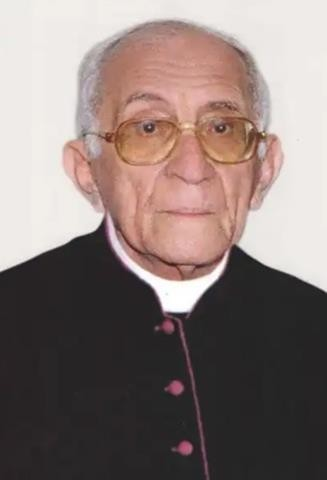

Monsenhor Eusébio de Oliveira Lima (Onésimo de Oliveira Lima)
Monsenhor Eusébio de Oliveira Lima, nascido Onésimo de Oliveira Lima, veio ao mundo no dia 7 de maio de 1929, em Limoeiro do Norte, Ceará, sendo o primeiro filho de Melquíades de Oliveira Lima e Apolinária Cirila de Oliveira Lima. Foi batizado no dia 7 de junho de 1929 pelo Reverendo Padre Vital Gurgel Guedes, então vigário da Catedral de Limoeiro, com seus avós maternos, João Batista de Oliveira Lima e Maria Cirila de Lima, como padrinhos. Em outubro do mesmo ano, foi crismado na igreja de Limoeiro do Norte pelo Cardeal Dom Manoel da Silva Gomes, com o Padre Acelino Viana Arrais como padrinho.
Ainda criança, Eusébio fez sua Primeira Comunhão em 30 de dezembro de 1934, aos cinco anos. Ele recebeu suas primeiras lições com a professora particular Maria da Penha Gurgel de Freitas, carinhosamente chamada de Dona Peinha. Aos 10 anos, em 1939, ingressou no Seminário Menor dos Padres Salvatorianos, conhecido então como Escola Apostólica de Parangaba, sendo recebido pelo Padre Miguel Sehledorn. Desde cedo, já demonstrava um comportamento exemplar, espírito piedoso e uma vocação missionária marcante. Em fevereiro de 1942, partiu para o Seminário Menor de Jundiaí, em São Paulo, sob os cuidados do Padre Carlos Marques Vieira. Lá, concluiu seus estudos de ginásio e científico com brilhantismo, finalizando em 1946.
No dia 1º de fevereiro de 1947, Eusébio entrou para o noviciado junto com outros quinze seminaristas, adotando o nome "Eusébio", conforme a tradição da época. Seu mestre de noviciado foi o Padre Pio Wespel. No dia 2 de fevereiro de 1948, professou seus primeiros votos religiosos na Congregação do Divino Salvador e, em seguida, iniciou os estudos de Filosofia e Teologia no Seminário Maior da Congregação, em Indianápolis, São Paulo.
Foi ordenado sacerdote no dia 3 de janeiro de 1954, pelas mãos de Dom Paulo Rolim Loureiro, no Seminário Nossa Senhora da Assunção, em São Paulo. Em 10 de janeiro de 1954, celebrou sua primeira missa solene na Catedral de Limoeiro do Norte. Sua trajetória pastoral começou na Paróquia de Nossa Senhora Aparecida, em Indianápolis, São Paulo, como vigário cooperador. Entre 1954 e 1958, foi professor no Seminário Menor de Jundiaí.
Em 1959, retornou ao Ceará e foi designado para trabalhar em Parangaba, exercendo funções de professor no seminário, coadjutor paroquial e tesoureiro. Durante esse período, destacou-se no trabalho social nas Casas Populares, comunidade carente da paróquia, onde iniciou a construção de uma igreja dedicada ao Imaculado Coração de Maria, cuja pedra fundamental foi lançada com a presença do Arcebispo Dom Antônio de Almeida Lustosa. Eusébio não só ergueu a igreja física, mas também construiu uma igreja viva, fomentando a fé e a comunidade local.
Em 1961, assumiu a Paróquia de Santo Antônio, em Barbalha, onde permaneceu até 1986. Nesse período, liderou a construção do Hospital Maternidade São Vicente de Paulo e fundou a Casa do Ancião, além de realizar reformas no Salão Paroquial e na Igreja Matriz de Santo Antônio. De 1987 a 1989, em Fortaleza, reformou a Igreja de São José, no Parque São José, um templo originalmente construído por seu irmão, Dom Afonso de Oliveira Lima.
Monsenhor Eusébio de Oliveira Lima faleceu no dia 1º de julho de 2020, aos 91 anos, no Hospital São Vicente de Paula, em Barbalha, deixando um legado de fé, dedicação e serviço às comunidades por onde passou.